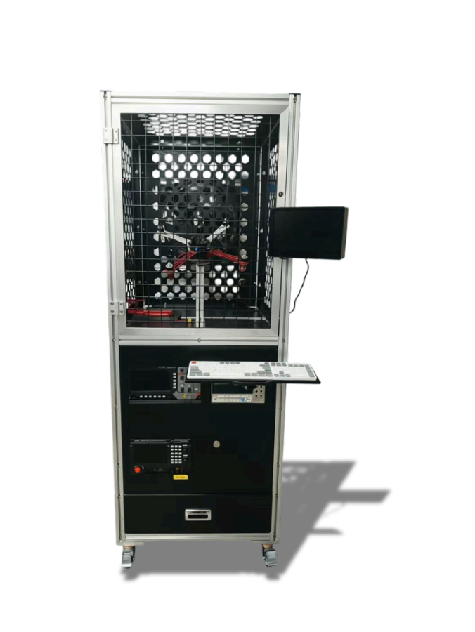

AeroBOT-Z3 无人机综合调试与检测实训平台
集成高精度示波器、台式万用表与可调风场的一体化调试实训系统，覆盖电性能检测、信号校准、风扰模拟全流程，构建闭环式无人机调试技术体系。

产品概述
该无人机综合调试实训台深度集成专业级测试与工况模拟核心硬件，搭载高精度数字示波器、高精度台式万用表及可调模拟风场风扇，从电性能检测、信号波形校准、动态风扰模拟三大核心技术维度，覆盖多旋翼无人机整机参数标定、硬件调试检测、电路故障诊断、算法适配校验及实飞性能模拟测试全技术流程，构建一体化闭环式无人机研发调试与实训测试技术体系。
设备采用高强度承重防护台架一体化成型结构，搭配集成式一体化控制终端与模块化快拆安装结构，机械结构抗震动、抗形变性能优异，拆装标定便捷、设备固定稳固，可支撑多旋翼无人机硬件检修、算法调试、故障排查、风场抗扰测试多任务递进式技术实训，有效强化实操人员无人机硬件调试与飞行控制优化的工程技术能力。
核心功能
电性能精准检测：内置高精度台式万用表，可精准采样无人机电源供电电压、母线工作电流、模块内阻及电路压降等关键电参数，精准排查供电链路损耗、线路接触异常、元器件功率匹配等硬件故障。
信号波形实时校准：配套集成数字示波器可实时采集飞控PWM控制信号、传感器数据输出波形，直观观测信号时序变化、波形畸变及指令传输延迟，精准校准控制信号同步性与传输稳定性。
动态风扰模拟：配备高速可调风扇，支持风速无级精准调节，可精准模拟户外复杂自然风扰等真实飞行扰动工况，满足无人机抗风姿态稳定性调试、飞控闭环抗扰算法参数整定等核心技术测试需求。
一体化控制终端：集成式调试终端统一管理所有仪器，简化操作流程，使调试过程精准易上手，适配不同技术层次的教学与研发场景。
产品特点
集成控制调试终端，操作精准易上手，降低使用门槛。
全套高精度检测仪器与部件：数字示波器、台式万用表、可调风场风扇，覆盖调试检测全需求。
支持风场模拟，无需户外即可完成抗风扰测试，安全高效。
模块化快拆安装结构，便于设备扩展与维护，适应不同学习层次与科研任务。
高强度铝合金整体台架，结构稳固，抗震动、抗形变，保障精密测量环境。
基本配置参数
教学与科研价值
AeroBOT-Z3 将无人机调试工作中最核心的电性能检测、信号分析、环境模拟三大环节集成为一体，为学生提供了一个“所见即所得”的工程实践平台。学生可以通过实际操作万用表排查电路故障、使用示波器分析飞控信号，并在风场模拟环境下验证抗扰算法，完整经历由硬件调试到软件优化的工作流程，从而系统性地掌握无人机调试工程师所需的核心技能。
在科研方面，该平台可作为飞控算法硬件在环测试床，支持不同控制参数下的动态响应测试、传感器数据质量评估以及风扰条件下的鲁棒性验证，为无人机控制系统研究提供可靠的数据支撑。
适用场景
适用于高校无人机工程、自动化、电子信息、航空维修等专业的飞控调试实训、电子电路检测教学；无人机研发企业的硬件在环测试、整机性能标定与故障诊断；以及无人机竞赛团队的技术保障与赛前调试。